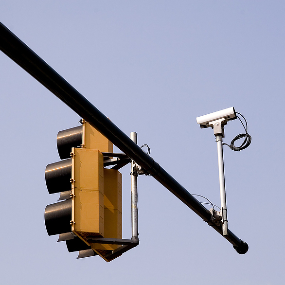
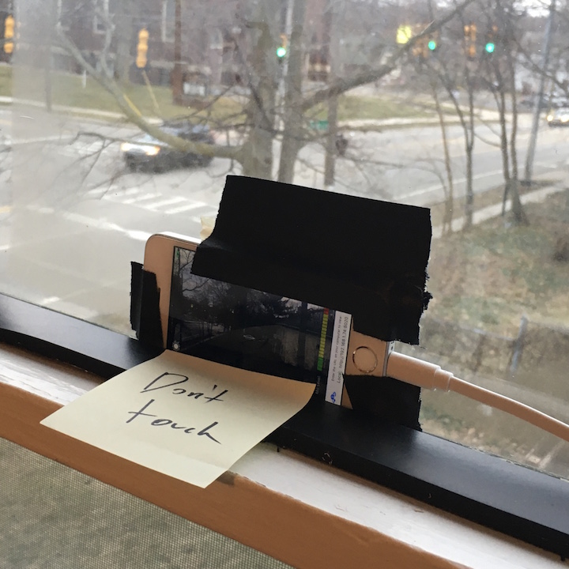
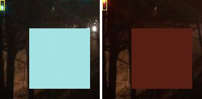
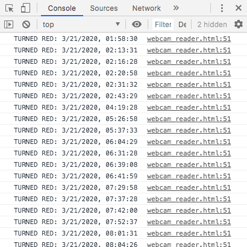
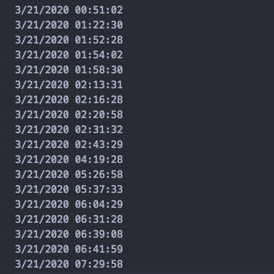

Untimed traffic lights usually detect cars using a sensor in the pavement. I’m pretty sure the one by my house uses a camera instead, pointed at the lane awaiting a green light:
I wonder if this sensor-signal-light loop is self-contained within the intersection. Does it operate unincluded from the carefully synchronized signal grid of the busier streets? Does it send a signal to anyone else, or does it talk to itself tracelessly? Even if I knew anything about circuitry, I’d go to jail trying to tap the sensor.
(I fantasize about a city department control room that receives signal-changes from this light and all the lights in the city, like I half-remember seeing on a news station field trip as a kid. For a minute, I looked to see if these real time triggers were accessible anywhere by API. Some surprising data is public!)
If I wanted to do this, I had to make my own sensor.
I got an app that turns my old iPhone into a webcam. It can stream the video feed to anything on my wifi network, so I can embed it in a webpage, as long as I load it while I’m in my house. I taped the phone to my bedroom window:
On the webpage that displays the phone video feed, I used a Javascript method that gets the RGB pixel values from a section of the video feed frame. I highlighted a tiny crop where the clearest stoplight was visible:
To me, the most interesting part was writing a test for these RGB values, quantifying “did this just turn red?” for every frame of this peephole. This is the closest I’ve come to building anything related to computer vision. Every time this area turned sufficiently red, I recorded a timestamp. I ran it while I slept.
My browser console output looks like:
Clean up with Find/Replace:
(The light that shines sideways into my bedroom signals the busier street. So while I tracked when the usually-green light turned red, note that I drew the chart in reverse, green turns onto a majority red, representing the light on the quieter street.)
I use another Javascript file (using d3.js) to split each datetime up into its time (for the x-axis) and date (for the y-axis) and draw the chart with those coordinates. This is really just a scatterplot with long sticks instead of dots.